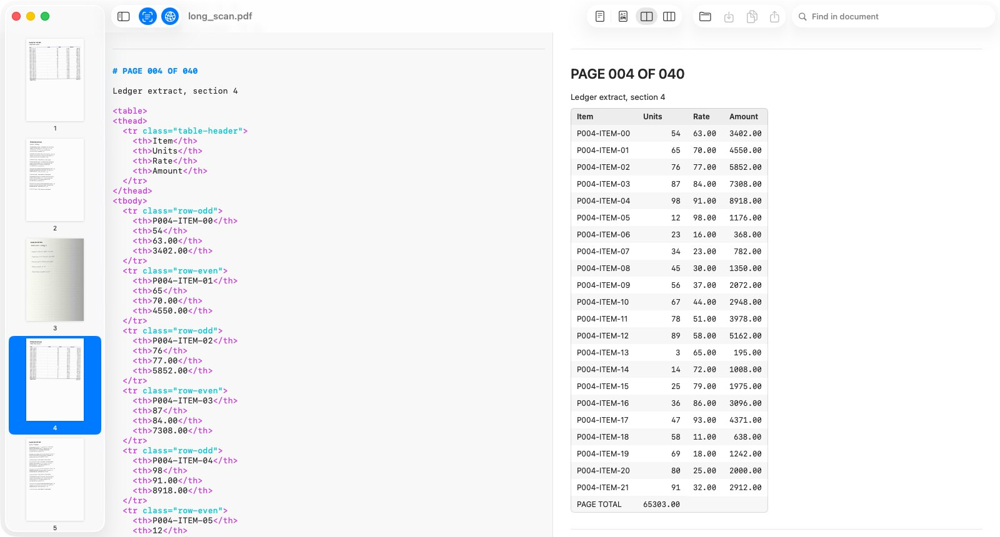
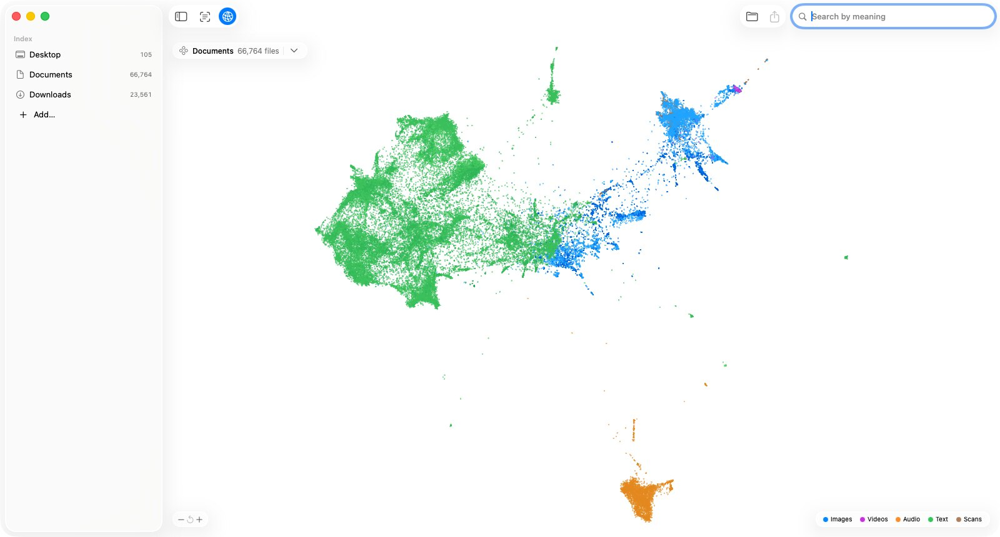

Search your Mac by meaning.
Every file. Any language. On device.
MD5 6d4b3c306acef9bac7fbeb0ba73bb037
Built for files that never sit still.
2.7Mfiles in one index
19 msto search all of them
90%less work when a file grows
Liveedits, moves and deletes apply in place
Made like a Mac app.
Finderbrowse, preview and share the way you already do
Metalsearch and every model on the GPU
0 bytesleave your Mac, ever
Opensource, Apache 2.0
One index for everything.
Every file
Text, code, PDFs, images, audio, video.
Any language
Matched by meaning, not keywords.
Search by file
Drop an image, a clip or a document.
To the passage
Page 12, Line 1240.
OCR
Scans to Markdown, on device.
Filters
type: in: date: tag: score:
Duplicates
Stacked into one result.
Folders and Photos
Kept in sync as they change.
Private
Offline after one download.
Scans become Markdown.

Folders become maps.

Built for agents.
HTTP and MCP, on this Mac.
# Claude Code claude mcp add --transport http omni http://127.0.0.1:51234/mcp # Any HTTP client curl http://127.0.0.1:51234/v1/search -d '{"query": "invoice from february", "top_k": 5}'
- Search
/v1/search- OCR
/v1/chat/completions·/v1/ocr- Embeddings
- OpenAI · Jina · Cohere · Gemini
- Tags
/v1/tag·/v1/files/tags- Index
/v1/sources·/v1/files/status- MCP
- 9 tools · SKILL.md
Benchmarks.
300 files, community runs.
Loading community benchmarks…
FAQ
Loading…
Paper
omni-macos: On-Device Omni-Modal Search on Apple Silicon
@article{xiao2026omnimacos,
title = {omni-macos: On-Device Omni-Modal Search on Apple Silicon},
author = {Xiao, Han},
journal = {arXiv preprint arXiv:2608.05543},
year = {2026},
url = {https://arxiv.org/abs/2608.05543}
}